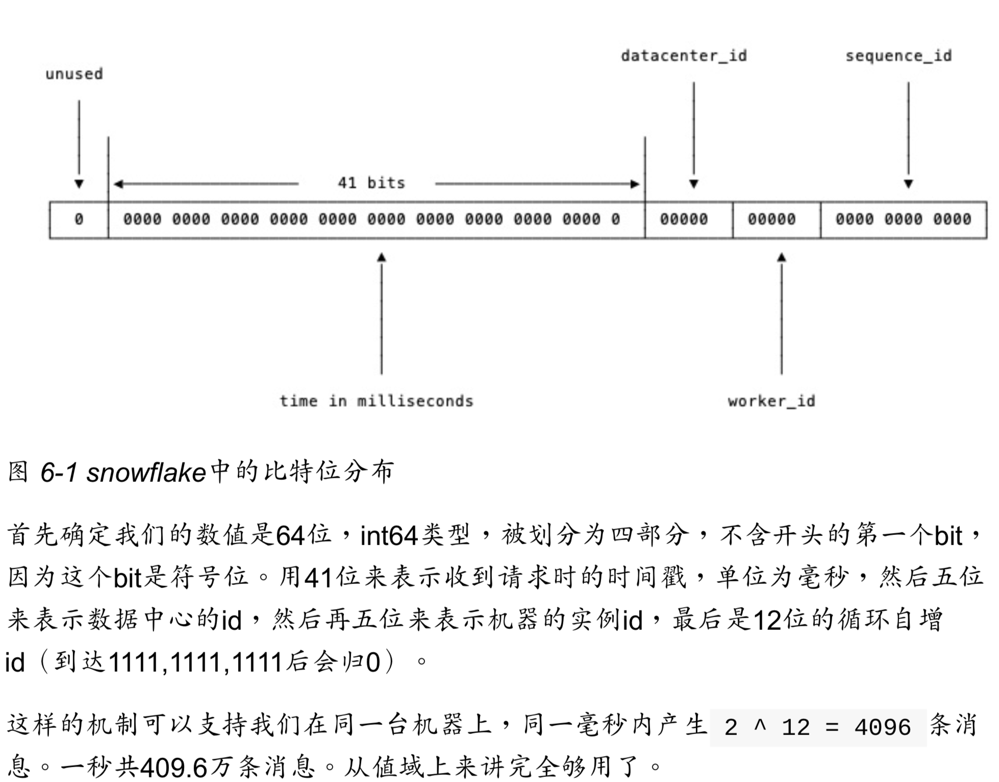

1.5.3 顺序一致性内存模型¶
go 中同一个 goroutine 保证顺序一致性内存模型，但是不同 goroutine 之间不保证，需要定义明确的同步事件。
package main
import (
"fmt"
"sync"
)
func main() {
go fmt.Println("hello")
}
// 使用 done 同步
func main() {
done := make(chan int, 1)
go func() {
fmt.Println("hello")
done <- 1 // 同一个 goroutine 满足顺序一致性，这个时候已经打印
}()
<-done
}
// 或者用mutex同步
func main() {
var mu sync.Mutex
mu.Lock()
go func() {
fmt.Println("hello")
mu.Unlock() // UhLck一定在 print 之后发生
}()
mu.Lock() // Lock一定在unlock之后发生，通过sync.Mutex保证
}
1.5.4 初始化顺序¶

1.5.6 基于Channel通信¶
// 利用channel缓存大小控制并发执行的goroutine最大数
var limit = make(chan int, 3)
func main() {
for _, w := range work {
go func() {
limit <- 1
w()
<-limit
}()
}
select {} // 阻塞 main，避免过早退出
}
1.6 常见并发模式¶
CSP: 同步通信
Do not communicate by sharing memory; instead, share memory by communicating. 不要通过共享内存来通信，而应通过通信共享内存。
1.6.1 并发Hello World¶
并发编程核心概念是同步通信。
// 错误的示例
package main
import (
"fmt"
"sync"
)
func main() {
var mu sync.Mutex
mu.Lock()
go func() {
fmt.Println("hello")
mu.Lock()
}()
mu.Unlock() //这里的Lock/Unlock无法保证顺序，必须先Lock之后才能Unlock
}
修复方式用main 中使用两次 lock
func main() {
var mu sync.Mutex
mu.Lock()
go func() {
fmt.Println("hello")
mu.Unlock() // UhLck一定在 print 之后发生
}()
mu.Lock() // Lock一定在unlock之后发生，通过sync.Mutex保证
}
使用无缓冲管道实现同步:
func main() {
done := make(chan int)
go func() {
fmt.Println("hello")
<- done
}()
done <- 1 // 发送操作完成才有可能接受，所以会等待先执行 <-done
}
对于无缓存Channel 进行的接收，发生在对该 channel 进行发送完成之前。
更好的做法是将管道的发送和接受方调换，使用有缓存的管道。避免同步受到管道缓存大小影响。 对于带缓冲的channel,对于channel 的第 k 个接手完成操作发生在第k+c 个发送操作完成之前， 其中 c 是 channel 的缓存大小。
func main() {
done := make(chan int, 1)
go func() {
fmt.Println("hello")
done <- 1
}()
<-done
}
扩展到 n 个：
package main
import (
"fmt"
)
func main() {
done := make(chan int, 10)
for i := 0; i < cap(done); i++ {
go func() {
fmt.Println("hello")
done <- 1
}()
}
for i := 0; i < cap(done); i++ {
<-done
}
}
当然最简单的方式使用 sync.WaitGroup , wg.Add wg.Done wg.Wait
1.6.2 生产者消费者¶
package main
import (
"fmt"
"os"
"os/signal"
"syscall"
)
func Producer(factor int, out chan<- int) {
for i := 0; ; i++ {
out <- i * factor
}
}
func Consumer(in <-chan int) {
for v := range in {
fmt.Print(v)
}
}
func main() {
ch := make(chan int, 64)
go Producer(3, ch)
go Producer(5, ch)
go Consumer(ch)
sig := make(chan os.Signal, 1)
signal.Notify(sig, syscall.SIGINT, syscall.SIGTERM)
fmt.Printf("quit %v\n", <-sig)
}
1.6.3 发布订阅¶
Pub/Sub m:n
1.6.4 控制并发数¶
通过带缓存管道的发送和接收规则实现最大并发阻塞。
package main
var limit = make(chan int, 3)
func main() {
for _, w := range work {
go func() {
limit <- 1
w()
<-limit
}()
}
select {}
}
type gate chan bool
func (g gate) enter() { g<-true }
func (g gate) leave() { <-g }
type gatefs struct {
fs vfs.FileSystem
gate
}
func (fs gatefs) Lstat(p string) (os.FileInfo, error) {
fs.enter()
defer fs.leave()
return fs.fs.Lstat(p)
}
1.6.5 赢者为王¶
func main() {
ch := make(chan string, 32)
go func() {
ch <- searchByBing("golang')"
}()
go func() {
ch <- searchByGoogle("golang')"
}()
go func() {
ch <- searchByBaidu("golang')"
}()
fmt.Println(<-ch)
}
1.6.7 并发安全退出¶
package main
import (
"fmt"
"sync"
"time"
)
func worker(wg *sync.WaitGroup, cannel chan bool) {
defer wg.Done()
for {
select {
default:
fmt.Println("hello")
case <-cannel:
return
}
}
}
func main() {
cancel := make(chan bool)
var wg sync.WaitGroup
for i := 0; i < 10; i++ {
wg.Add(1)
go worker(&wg, cancel)
}
time.Sleep(time.Second)
close(cancel)
wg.Wait()
}
1.6.8 context 包¶
go1.7 增加了 context, 简化对于处理单个请求的多个goroutine之间与请求域的数据、超时和退出等操作。
1.7 错误和异常¶
错误被认为可预期的，异常则是非预期的。
1.7.1 错误处理策略¶
go 中的导出函数一般不抛出异常，一个未受控的异常可以看成程序 bug。 web框架一般会防御性地捕获所有异常。
// go库实现习惯是即使包内部使用了 panic，但是在函数 export 时候会被转换成明确的错误值
func ParseJSON(input string) (s *Syntax, err error) {
defer func() {
if p:=recover(); p!=nil {
err = fmt.Errorf("JSON: internal error: %v", p)
}
}()
// ... parser ...
}
1.7.2 获取错误上下文¶
一般为了防止丢失错误信息，一般使用包装函数。 go 大部分代码逻辑类似，先一系列初始检查，用于防止错误发生，然后是实际逻辑。
f, err := op.Open("filename")
if err !=nil {
// 失败场景
}
// 正常流程
`1.7.3 错误的错误返回
go 中 error 是一种接口类型。接口信息包含了原始类型和原始的值。 只有当接口的类型和原始值都为空，接口值才对应 nil。`
// 错误示例
func returnsError() error {
var p *MyError = nil
if bad() {
p = ErrBad
}
return p // weill always return a non-nil error
// 返回的是一个Myerror类型的空指针，而不是 nil
}
// rightway
func returnsError() error {
if bad() {
return (*MyError)(err)
}
return nil
}
1.7.4 剖析异常¶
必须在 defer 函数中直接调用 recover，并且不能包装 recover 函数，直接调用。 必须和有异常的栈帧只隔一个栈帧才能正确捕获异常。
— 2章 CGO 编程
— 4章 RPC和Protobuf
RPC (Remote Procedure Call)
4.1 RPC 入门¶
示例使用了内置的rpc 模块演示
4.2 Protobuf¶
Prtocol Buffers简称
4.3 玩转 RPC¶
4.4 gRPC 入门¶
基于 HTTP/2 协议设计，可以基于一个HTTP/2链接提供多个服务。

5 Go和 web¶
go web框架使用radix tree 实现 route
5.3 中间件middleware¶
解耦业务和非业务代码逻辑
package main
import (
"net/http"
"time"
)
func hello(wr http.ResponseWriter, r *http.Request) {
wr.Write([]byte("hello"))
}
func timeMiddleware(next http.Handler) http.Handler {
return http.HandlerFunc(func(wr http.ResponseWriter, r *http.Request) {
timeStart := time.Now()
// next handler
next.ServeHTTP(wr, r)
timeElasped := time.Since(timeStart)
logger.Println(timeElasped)
})
}
func main() {
http.Handle("/", timeMiddleware(http.HandlerFunc(hello)))
err := http.ListenAndServe(":8000", nil)
//....
}
// 标准库的关系
type Handler interface {
ServeHTTP(ResponseWriter, *Request)
}
type HandlerFunc func(ResponseWriter, *Request)
func (f handlerFunc) ServeHTTP(w ResponseWriter, r *Request) {
f(w, r)
}
请求调用链：
h = getHandler() => h.ServeHTTP(w, r) => h(w, r)
5.3.3 更优雅的中间件写法¶
r = NewRouter()
r.Use(logger)
r.Use(timeout)
r.Use(ratelimit)
r.Add("/", helloHandler)
type middleware func(http.Handler) http.Handler
type Router struct {
middlewareChain [] middleware
mux map[string] http.Handler
}
func NewRouter() *Router{
return &Router{}
}
func (r *Router) Use(m middleware) {
r.middlewareChain = append(r.middlewareChain, m)
}
func (r *Router) Add(route string, h http.Handler) {
var mergedHandler = h
// 反向遍历
for i:= len(r.middlewareChain)-1; i>=0; i-- {
mergedHandler = r.middlewareChain[i](mergedHandler)
}
r.mux[route] = mergedHandler
}
哪些可以写成中间件呢？参考 gin-gonic/contrib
5.4 Validator¶
https://github.com/go-playground/validator
通过反射对结构体进行树形遍历
5.5 Database 和数据库打交道¶
package main
import "database/sql"
import _ "github.com/go-sql-driver/mysql"
db, err := sql.Open("mysql", "user:password@/dbname")
// import _ "github.com/go-sql-driver/mysql" 实际上调用了 mysql init
func init() {
sql.Register("mysql", &MySQLDriver{})
}
Sql Build 相比orm 在可维护性上取得了更好平衡，不会屏蔽太多细节。
5.6 Ratelimit 服务流量限制¶
磁盘 IO/CPU/带宽瓶颈
常见的限流手段：
- 漏桶: 有一个一直装满水的桶，每过固定一段时间向外漏一滴水。如果你接收到了这滴水，就可以继续请求服务，否则等待下一滴水
- 令牌桶: 匀速向桶中添加令牌，服务请求需要从桶中获取令牌
令牌桶使用比较广泛，业界流行限流器大多数基于令牌桶。
github.com/juju/ratelimit
原理：令牌桶模型实际上是对全局计数的加减法操作过程， 但使用计数器需要自己加上读写锁。
可以使用 bufferd channel 完成简单的加令牌和取令牌操作。
package main
import (
"fmt"
"time"
)
func main() {
var fillInterval = time.Millisecond * 10
var capacity = 100
var tokenBucket = make(chan struct{}, capacity)
fillToken := func() {
ticker := time.NewTicker(fillInterval)
for {
select {
case <-ticker.C:
select {
case tokenBucket <- struct{}{}:
default:
}
fmt.Println("current token cnt:", len(tokenBucket), time.Now())
}
}
}
go fillToken()
time.Sleep(time.Hour)
}
func TakeAvailable(block bool) bool {
var takenResult bool
if block {
select {
case <-tokenBucket:
takenResult = true
}
} else {
select {
case <-tokenBucket:
takenResult = true
default:
takenResult = false
}
}
return takenResult
}
5.6.3服务瓶颈和 Qos¶
Qos: Quality of Service。包含可用性、吞吐量、时延、时延变化和丢失等
5.7 大型项目分层¶
- controller: 服务入口，负责处理路由，参数校验，请求转发
- logic/service: 逻辑(服务)层，一般是业务逻辑入口。可以认为从这里开始参数一定是合法的。业务逻辑和流程也在这一层。(Business Rules)
- DAO/Repository: 负责和数据、存储打交道。更简单的函数、接口暴露给Logic层使用。负责数据持久化。
5.8 接口和表驱动开发¶
5.8.2 使用函数封装业务流程¶
把相似的行为放在一起，然后打包成一个个函数。
5.8.3 使用接口来做抽象¶
业务早期不建议引入接口。主流程稳定可以引入接口做抽象
5.8.4 接口优缺点¶
优点:正交性。依赖反转 缺点：难以查找实现了接口的类型
5.8.5 表驱动开发¶
func entry() {
var bi BusinessInstance
switch businessType {
case TravelBusiness:
bi = travelorder.New()
case MarketBusiness:
bi = marketorder.New()
default:
return errors.New("not supported business")
}
}
var BusinessInstanceMap = map[int]BusinessInstance{
TravelBusiness: travelorder.New(),
MarketBusiness: marketorder.New(),
}
func entry() {
bi := BusinessInstance[businessType]
}
5.9 灰度发布和A/B test¶
恢复一般两种方式实现：
- 分批次部署实现灰度发布。1-2-4-8-32… 个机器。通过观察日志和监控系统发现错误
- 通过业务规则进行灰度发布。比如针对用户 id 取模，落在一定范围内的执行相关逻辑
如果使用哈希算法，需要注意性能和均匀度。
6 分布式系统¶
6.1 分布式 id 生成器¶
twitter snowflake 算法

github.com/bwmarrin/snowflake 轻量级的snowflake实现。
sonyflake sony一个开源项目，思路和snowflake类似，分配上有所不同
github.com/sony/sonyflake
6.2 分布式锁¶
package main
import (
"fmt"
"os"
"github.com/bwmarrin/snowflake"
)
func main() {
n, err := snowflake.NewNode(1)
if err != nil {
fmt.Println(err)
os.Exit(1)
}
for i := 0; i < 3; i++ {
id := n.Generate()
fmt.Println("id", id)
fmt.Println(
"node: ", id.Node(),
"step: ", id.Step(),
"time: ", id.Time(),
"\n",
)
}
}
6.2.1 进程内加锁¶
trylock: 尝试加锁，加锁成功执行后续流程，如果加锁失败也不会阻塞， 而会直接返回加锁结果。go 中可以用大小为1的 channel 模拟 trylock。
package main
import (
"fmt"
"sync"
)
type Lock struct {
c chan struct{}
}
func NewLock() Lock {
var l Lock
l.c = make(chan struct{}, 1)
l.c <- struct{}{}
return l
}
func (l Lock) Lock() bool {
lockResult := false
select {
case <-l.c:
lockResult = true
default:
}
return lockResult
}
func (l Lock) UnLock() {
l.c <- struct{}{}
}
var counter int
func main() {
var l = NewLock()
var wg sync.WaitGroup
for i := 0; i < 10; i++ {
wg.Add(1) // add 1
go func() {
defer wg.Done()
if !l.Lock() {
fmt.Println("lock failed")
return
}
counter++
fmt.Println("current counter", counter)
l.UnLock()
}()
}
wg.Wait()
}
单机系统 trylock 不好，大量 goroutine 抢锁可能导致 cpu 无意义浪费。(活锁)
6.2.3 基于 redis setnx¶
redis setnx 模拟分布式锁
适合高并发场景下，用来争抢一些唯一的资源。 不过依赖请求达到 redis 的顺序，网络慢的用户就自求多福了
6.2.4 基于 ZooKeeper¶
github.com/samuel/go-zookeeper/zk
基于 ZooKeeper 的锁与基于redis的锁不同之处在于 Lock 成功之前会一直阻塞， 与单机中的 mutex.Lock 很相似。
分布式阻塞锁 适合分布式任务调度场景，但是不适合高频次持有锁时间短的抢锁场景。
Google(chubby论文)，基于强一致性的锁适用于粗粒度加锁操作，粗粒度指的是占用时间较长。
package main
import (
"fmt"
"time"
"github.com/samuel/go-zookeeper/zk"
)
func main() {
c, _, err := zk.Connect([]string{"127.0.0.1"}, time.Second)
if err != nil {
panic(err)
}
l := zk.NewLock(c, "/lock", zk.WorldACL(zk.PermAll))
err = l.Lock()
if err != nil {
panic(err)
}
fmt.Println("lock success, do your logic")
time.Sleep(time.Second * 10)
l.UnLock()
fmt.Println("unlock success, finish your logic")
}
6.2.5 基于 etcd¶
类似 ZooKeeper 的组件
github.com/zieckey/etcdsync
根据性能和可靠性、运维成本等仔细权衡使用哪一种分布式锁方案。
6.3 延时任务系统¶
- 实现一套类似 crontab 的分布式定时任务管理
- 实现一个支持定时发送消息的消息队列
6.3.1 定时器实现¶
6.3.1.1 时间堆¶
小顶堆, golang 内置定时器实现
6.3.1.2 时间轮¶
任务分发：
- 监听消息。保证消息队列高可用
- 调用回调函数。放置函数拖垮系统
6.3.3 数据再平衡和幂等¶
参考 ElasticSearch 的数据分布设计，每份任务数据有多个副本。
很多队列不支持 exactly once 语义，这种情况下需要用户自己负责消息去重或者消费的幂等处理。
6.4 分布式搜索引擎¶
关系型数据库通常用于OLTP(online transaction processing)
ElasticSearch 是开源分布式搜索引擎霸主
倒排索引
查询 DSL：es 定义了一套查询 DSL。bool query
基于 client sdk 开发：
“gopkg.in/olivere/elastic.v3”
不要把 es 当成强一致性数据库用
- 异构数据同步
更常见的场景是同步数据到搜所引擎
- 基于时间戳
- 通过 binlog。阿里开源的 Canal
6.5 负载均衡¶
- 按顺序处理
- 随机挑选
- 根据某种权重
洗牌算法，shuffle。注意 rand.Seec(time.Now().UnixNano()) 设置种子
6.5.3 ZooKeeper 集群的随机节点挑选问题¶
6.6 分布式配置管理¶
6.6.2 使用 etcd 实现配置更新¶
简单的配置可以讲内容完全存储在 etcd 中。
etcdctl get /configs/remote_config.json
6.6.3 配置膨胀¶
支持版本管理进行回滚
客户端缓存容错
6.7 分布式爬虫¶
6.7.1 基于 colly 单机爬虫¶
6.7.2 分布式爬虫¶
nats go 高性能分布式消息队列